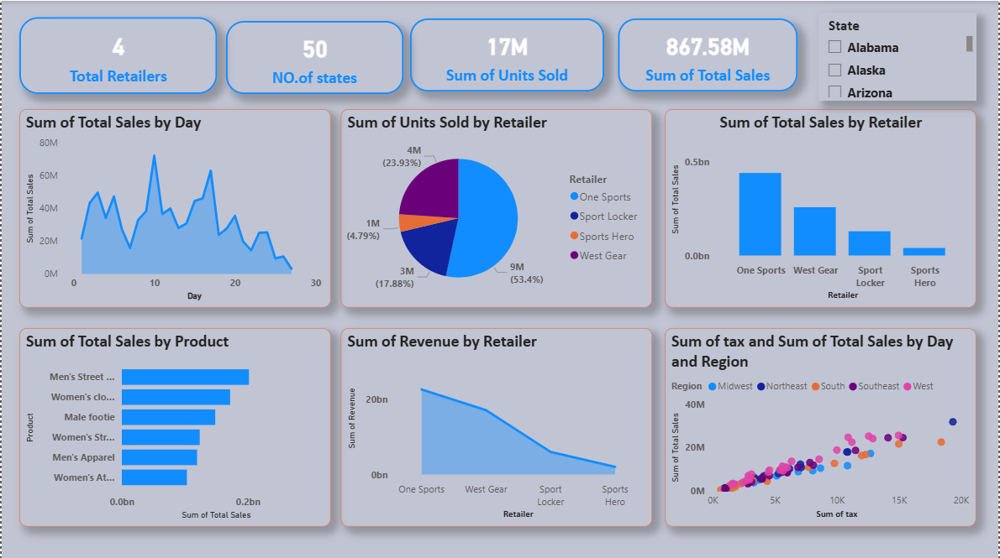
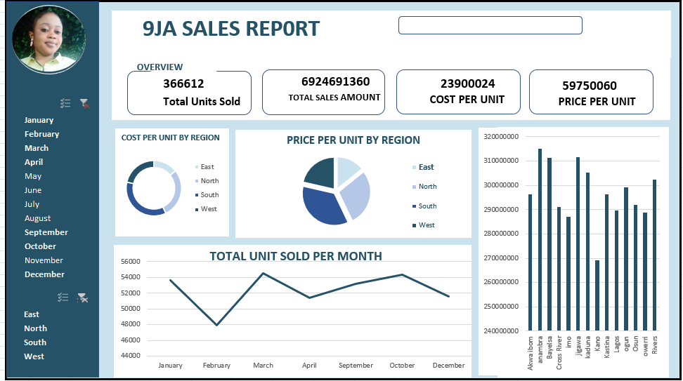
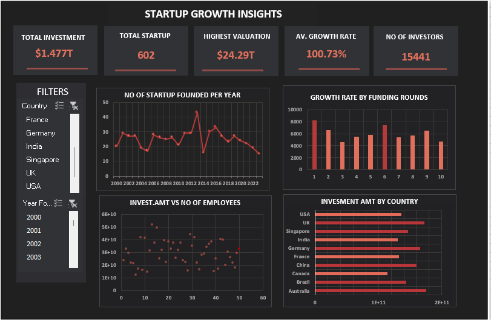

Hello, I'm Blessing Daniel, a detail-oriented Data Analyst based in Nigeria. I'm passionate about turning raw data into clear insights that drive smart business decisions. I enjoy working with Excel, SQL, and Power BI to clean data, build dashboards, and tell stories with numbers. Through personal learning and practice, I’ve built strong skills in data cleaning, visualization, and reporting. My goal is to use data to solve real problems and help organizations make confident, data-driven decisions.
✓ Analyze and interpret data to uncover trends and patterns
✓ Build interactive dashboards and reports in Power BI & Excel
✓ Write SQL queries to extract and manage data
✓ Use Python for data manipulation and analysis
✓ Create clear visualizations that make data easy to understand
Business Problem: Retail leadership needed visibility into which products and retailers drove revenue across 50 states.
Solution & Impact: Built interactive Power BI dashboard tracking 17M+ units sold. One Sports generated 53.4% of total volume.
Tools: Pivot tables, Power BI,Dax

Business Problem: Sales team lacked clear view of regional performance.
Solution:Created a regional profit dashboard in Excel. Merged sales + cost data in Excel, built map + bar visuals to compare East, West, North, South. Added drill-through so managers can go from region → product → SKU in 1 Click.

Business Problem: Investors needed market intelligence on funding trends.
Solution: I Built a global funding intelligence dashboard. Integrated and cleaned 12 years of data. Created time-series trends, country heat maps, and funding stage funnels. Used DAX to calculate growth rates and valuation benchmarks.
Tools: Excel,Pivot tables

Let's talk about your next data project.